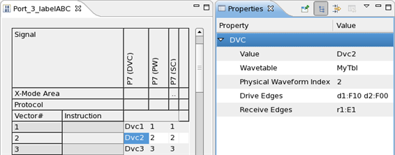
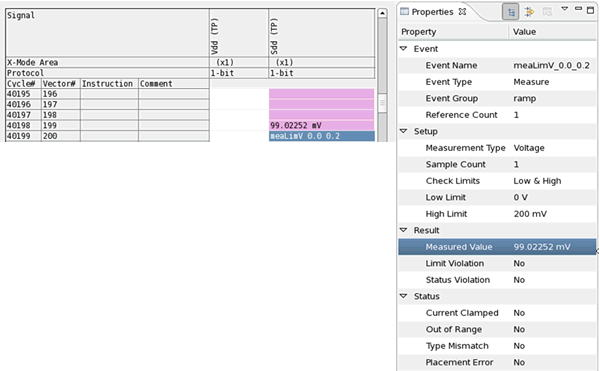
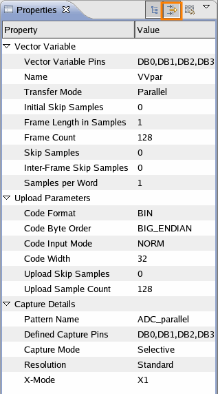

Pattern editor properties view
For the pattern editor, the properties view shows the vector parameters, that is the properties of
- a vector in SC (state character), PW (physical waveform), and DVC (device cycle) format,
- a test point,
- a vector variable for digital capture,
- a DSM ( Digital Source Memory) setup.
The properties view also allows to change some of the displayed values. To change a value, highlight it and either select or type the new value.
Examples
Vector properties
The graphic below shows the properties of a vector in device cycle (DVC) format.

On vector properties views you cannot edit any parameters. Do this in the pattern editor.
The vector properties view always shows the physical waveform. Drive edges and receive edges appear on two different lines. In collapsed mode the view is based on the base wavetable, in expanded mode the properties are taken from the primary wavetable.
Any abbreviations you may use in your wavetables, are translated into the proper action code for drive edges and receive edges.
Drive edges |
|
|
Receive edges |
|
|---|---|---|---|---|
Abbreviation |
Action code |
|
Abbreviation |
Action code |
0 |
F00 |
|
L |
E0 |
1 |
F10 |
|
H |
E1 |
!Z |
FN0 |
|
M |
EI |
Z |
FNZ |
|
U |
EU |
. (period) |
N |
|
X |
EX |
|
|
|
. (period) |
N |
Test point properties
The graphic below shows the properties of a test point, in this case the highlighting of a force value in a dynamic DC test setup.

The properties view of a dynamic DC measure test point will also show the measure result. See below:

Vector variable properties
The properties view of a vector variable (see below) allows to edit for example, the assigned pins, the transfer mode, and other parameters. To display additional data upload formatting parameters (Upload Parameters) click the Show Advanced Properties icon. For a definition of the vector variable parameters see Creating a Digital Capture setup.

Functional changes
- Introduced in SmarTest 6.5.2
- SmarTest 7.1.3: Vector properties view for SC, PW, and DVC format